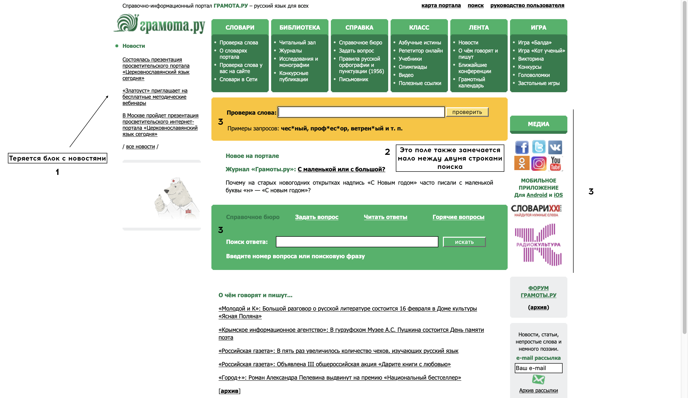
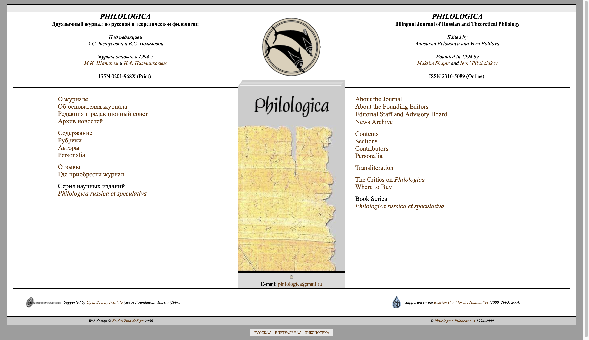

Каждый корпус в какой-то степени индивидуален. Вроде бы у каждого одна цель, но воплощения разные. А вот насколько разные и какие лучше мы и рассмотрим в этой тсатье.
Грамота.ру
- Блок с новостями: сделан достаточно незаметно, без какого-либо обрамления (словно висит в воздухе не прикреплённый)
- Непонятна мотивировка расположения этого текста между двумя поисковыми строками. За счёт этого акцент также уходит со второго поисковика
- 3. Странная цветовая гамма сайте, на располагающая к использованию. Особенно это бьёт по глазам, учитывая находящуюся сбоку рекламу и ссылки на соц. сети, которые сделаны пёстро и без учёта сочетаемости и удобства использования
При этом стоит сказать, что сайт достаточно понятен, если вы попали на него впервые. Сама задача сайта не предполагает сложностей, однако всё сделано доступно, пускай и с дизайнерскими просчётами.
PHILOLOGICA
Этот сайт сделан, на мой вкус, куда более удачно. Пусть достаточно простые оформление и шрифты (Serif и Times New Roman), однако этого оказывается достаточно. Нет лишних элементов, бросающихся в глаза и отвлекающих. Можно было бы сделать изменения языка по переключателю в углу сайта, однако подобное семитричное рпсположение даже выигрышнее смотрится.